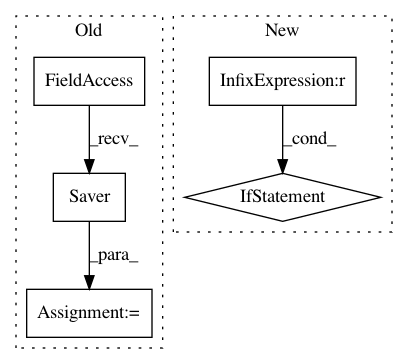

6e0c869f5e17c734010fe7cc1b975ef178af9d1c,agents/dagger/train/train.py,,run,#Any#Any#Any#,45
Before Change
pretrained_var_map[v.op.name[6:]] = v
alexnet_saver = tf.train.Saver(pretrained_var_map)
def init_fn(ses):
log.info("Initializing parameters.")
if not has_stuff(c.BVLC_CKPT_PATH):
After Change
def run(resume_dir=None, data_dir=c.RECORDING_DIR, agent_name=None):
// TODO: Clean up the net_name stuff
if agent_name is None:
net_name = net.ALEXNET_NAME
elif agent_name == "dagger_mobilenet_v2":
net_name = net.MOBILENET_V2_NAME
else:
raise NotImplementedError("%r agent_name not associated with trunk net" % agent_name)
os.makedirs(c.TENSORFLOW_OUT_DIR, exist_ok=True)
if resume_dir is not None:
date_str = resume_dir[resume_dir.rindex("/") + 1:resume_dir.rindex("_")]
else:
In pattern: SUPERPATTERN
Frequency: 3
Non-data size: 5
Instances
Project Name: deepdrive/deepdrive
Commit Name: 6e0c869f5e17c734010fe7cc1b975ef178af9d1c
Time: 2018-04-26
Author: cquiter@gmail.com
File Name: agents/dagger/train/train.py
Class Name:
Method Name: run
Project Name: CyberReboot/NetworkML
Commit Name: e2226f604c7f6444630be324d06a8130a01f3366
Time: 2018-01-22
Author: CStephenson970@gmail.com
File Name: NodeClassifier/utils/rnnclassifier.py
Class Name: AbnormalDetector
Method Name: __init__
Project Name: tensorlayer/tensorlayer
Commit Name: 359aee7044bcf0e26bc352cedb91ab195dd3456f
Time: 2016-07-19
Author: haodong@dyn1225-249.wlan.ic.ac.uk
File Name: tutorial_atari_pong.py
Class Name:
Method Name: